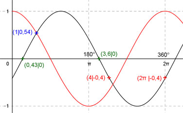

Aufgabe 201
Ergänzen Sie die Wertetabelle für x zwischen 0 und 2π:
y = cos(x - 2)
x 1 4 oder 2π
y 0,54 -0,4
Amplitude = 1 ; Periode = 2π ;
Phasenverschiebung (siehe unten) = -2 oder - 114,6° bedeutet,
cos x ist um 2 oder 114,6° nach rechts verschoben.
Berechnung der Nullstellen:
cos(x - 2) = 0 -->
Substitution (x - 2) = u --> cos u = 0 -->
u = π/2 + k * π mit k = -1, 0, 1, 2, ... -->
Rücksubstitution liefert
x - 2 = π/2 + k * π |+2 -->
x = 2 + π/2 + k * π
x1 = 2 - π/2 = 0,43 oder 24,6° gerundet
x2 = 2 + π/2 = 3,6 oder 206,3° gerundet.

Funktionswert an einer Stelle x ermitteln:
1 * 180°
x = 1 oder ---------- = 57,3°
π
f(1) = cos (1 - 2) = cos (57,3° - 114,6°) = 0,54 gerundet.
Berechnung der x-Werte für y = f(x) = -0,4
f(x) = -0,4 eingesetzt, existiert für cos x
zwischen 0 und π bzw. 0° und 180° und
zwischen π und 2π bzw. zwischen 180° und 360°.
cos x = -0,4 -->
x = arc cos -0,4 = 2 gerundet. -->
x1 = 2
x2 = (2π - 2) = 4,28
(siehe Einheitskreis)
 Unter Berücksichtigung der Phasenverschiebung:
4 * 180°
x1 = (2 + 2) = 4 oder ---------- = 229,2°
π
x2 = (4,28 + 2) = 2π oder 360°
Unter Berücksichtigung der Phasenverschiebung:
4 * 180°
x1 = (2 + 2) = 4 oder ---------- = 229,2°
π
x2 = (4,28 + 2) = 2π oder 360°